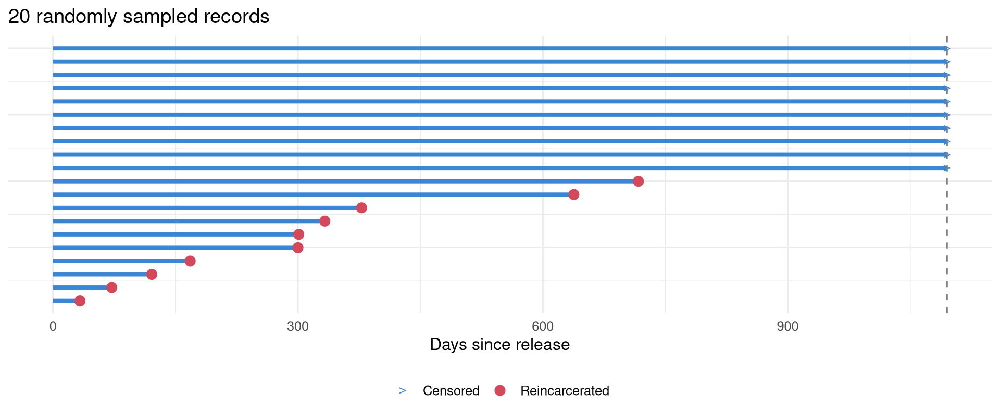
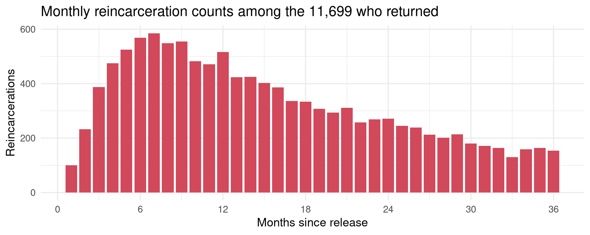
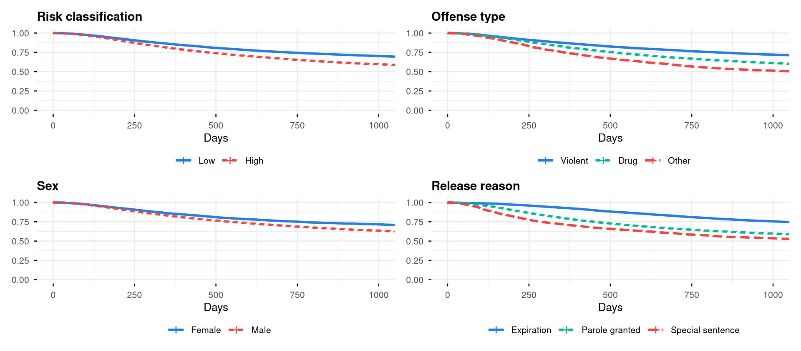

A Cox Proportional Hazards Analysis
Roughly one in three people released from Iowa prisons returns within three years.
Two people can both return within that window — one after 30 days, the other after two years.
A yes/no measure counts those identically.
If we only ask whether reincarceration happened, we miss when it happened — and when is what reentry programming has to plan around. . . .
A binary outcome tells you:
Analyzed with logistic regression
A time-to-event outcome tells you:
Analyzed with survival analysis
Our question: which demographic, risk, offense, and release characteristics are associated with the hazard of reincarceration — and do those associations hold steady over three years?
Iowa Prison Recidivism Status — Iowa Department of Corrections, via data.iowa.gov
Variables used
Analysis sample: 31,700 records (3 removed for missing sex) · 11,699 events (36.9%)


Offense type
| Type | Rate |
|---|---|
| Other | 50.3% |
| Drug | 40.7% |
| Property | 37.4% |
| Public Order | 31.8% |
| Violent | 29.2% |
Sex
Risk classification
| Level | Rate |
|---|---|
| High | 42.0% |
| Moderate | 35.6% |
| Low | 31.4% |
| Not Assessed | 26.6% |
People never formally assessed returned at a lower rate than the Low-risk group. The reason for the missing assessment is unknown.
| Release reason | N | 3-yr rate (%) |
|---|---|---|
| Paroled to Detainer - Iowa | 270 | 52.2 |
| Released to Special Sentence | 1,621 | 47.9 |
| Parole Granted | 20,551 | 41.9 |
| Paroled to Detainer - Out of State | 482 | 26.3 |
| Discharged - Expiration of Sentence | 6,958 | 26.1 |
| Paroled w/Immediate Discharge | 1,084 | 18.2 |
| Paroled to Detainer - U.S. Marshall | 446 | 4.7 |
| Paroled to Detainer - INS | 288 | 2.8 |

Selected categories shown for legibility; full results in the hazard ratio tables
| Comparison | χ² | df | p |
|---|---|---|---|
| Release reason | 1,254.57 | 7 | <0.001 |
| Offense type | 527.04 | 4 | <0.001 |
| Risk classification | 367.29 | 3 | <0.001 |
| Sex | 98.53 | 1 | <0.001 |
These are unadjusted comparisons — they don’t account for relationships among the predictors. That motivates a multivariable model.
\[ \lambda(t \mid X) = \lambda_0(t)\exp(\beta_1 X_1 + \beta_2 X_2 + \cdots + \beta_p X_p) \]
\[ \text{HR}_j = \exp(\beta_j) \]
The core assumption: the hazard ratio for a predictor stays constant across the whole follow-up period.
31,700 records · 11,699 events · LR χ² = 2,776.51, df = 16, p < 0.001 · concordance = 0.638
| Predictor | HR | 95% CI |
|---|---|---|
| Age (per year) | 0.986 | 0.984 – 0.987 |
| Male (vs. female) | 1.289 | 1.216 – 1.367 |
| Moderate risk (vs. low) | 1.180 | — |
| High risk (vs. low) | 1.515 | — |
| Not assessed (vs. low) | 0.867 | 0.774 – 0.972 |
| Violent offense (vs. drug) | 0.617 | 0.583 – 0.653 |
Reference: discharged at expiration of sentence
| Release reason | HR | 95% CI |
|---|---|---|
| Released to special sentence | 2.83 | 2.57 – 3.12 |
| Paroled to Iowa detainer | 2.60 | 2.19 – 3.08 |
| Parole granted | 1.89 | 1.80 – 1.99 |
| Paroled to out-of-state detainer | 1.02 | p = 0.871 |
| Paroled w/ immediate discharge | 0.72 | 0.62 – 0.83 |
| U.S. Marshal detainer | 0.15 | — |
| INS detainer | 0.11 | — |
Release pathway produced the largest differences in the model — but these are associations, not evidence that release arrangements cause or prevent return.
Scaled Schoenfeld residual tests on the initial model:
| Term | χ² | p |
|---|---|---|
| Global | 437.69 | <0.001 |
| Release reason | 370.66 | <0.001 |
| Risk classification | 31.01 | <0.001 |
| Offense type | 22.81 | <0.001 |
| Sex | 7.89 | 0.005 |
| Age | — | 0.115 |
Several predictor effects vary over follow-up. A single hazard ratio may not describe them well — exactly what Bellera et al. (2010) warn about.
Release reason showed the strongest violation → stratify on it.
Separate baseline hazard for each release category; shared coefficients for everything else.
Estimates barely moved
| Predictor | Initial | Stratified |
|---|---|---|
| Age | 0.986 | 0.986 |
| Male | 1.289 | 1.290 |
| High risk | 1.515 | 1.511 |
| Violent | 0.617 | 0.617 |
PH test after stratification
| Term | Before | After |
|---|---|---|
| Global | 437.69 | 67.15 |
| Risk | 31.01 | 8.63 |
| Offense | 22.81 | 50.49 |
Older age and female sex were associated with lower hazard; high-risk classification with higher hazard.
Release pathway showed the largest differences, though federal detainer groups likely reflect unobservable out-of-state returns.
The methodological finding is the real result: statistically significant coefficients do not mean the model is adequate.
Remaining hazard ratios should be read as summary estimates across follow-up, not constant relative hazards at every time point.
Concordance of 0.638 — modest. Post-release employment, housing, and treatment access are not in these data.
Individual identifiers are fully redacted, so we cannot verify whether one person contributes multiple release records — a possible violation of the independence assumption.
Follow-up duration could not be verified. Censoring at 1,095 days is an analytical assumption, not confirmed event-free observation.
Recidivism is the agency’s definition — return to prison for any reason, combining new offenses with technical violations.
Out-of-jurisdiction returns are invisible, which almost certainly explains the very low detainer-group hazards.
Stratification addressed one violating predictor; others remain.
Among 31,700 Iowa release records, 36.9% ended in reincarceration, with returns peaking 6–7 months after release.
Age, sex, risk classification, offense type, and release pathway were all associated with the hazard of return.
The proportional hazards assumption was violated, and stratification only partly addressed it.
Timing matters: whether someone returns and when they return are different questions, and only the second can inform when to deploy supervision and reentry resources.
Next steps: predictor-by-time interactions, competing-risk methods for out-of-jurisdiction transfers, and verified individual follow-up durations.
Questions?
Full write-up: Link to report